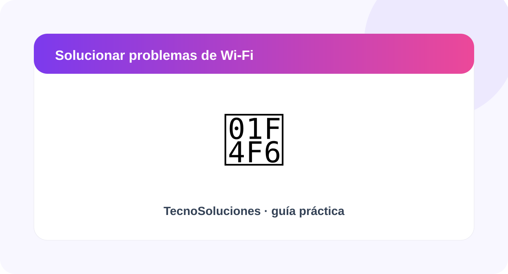
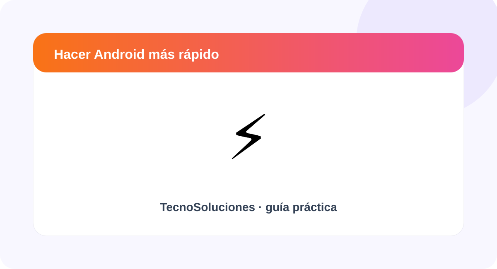

Cómo liberar espacio en Android sin borrar tus fotos
Aprende a detectar qué ocupa almacenamiento y qué puedes limpiar con seguridad.
Leer guía →Guías sencillas, visuales y actualizadas para que puedas solucionar problemas de tu celular, computadora, WhatsApp, Wi‑Fi y más, incluso si no eres experto.
Haz clic en una solución o usa el buscador.
Encuentra rápidamente la categoría de tu problema.
Artículos pensados para resolver problemas concretos.

Aprende a detectar qué ocupa almacenamiento y qué puedes limpiar con seguridad.
Leer guía →
Revisa archivos temporales, almacenamiento y opciones integradas del sistema.
Leer guía →
Encuentra videos, fotos y documentos pesados antes de eliminarlos.
Leer guía →
Una lista práctica para distinguir problemas del router, dispositivo o conexión.
Leer guía →
Revisa almacenamiento, aplicaciones y actualizaciones antes de tomar medidas drásticas.
Leer guía →La estructura está preparada para añadir nuevas guías sobre Gmail, Chrome, Bluetooth, batería, USB y recuperación de archivos.
Sugerir un tema →Haz clic en el problema que más se parece al tuyo.